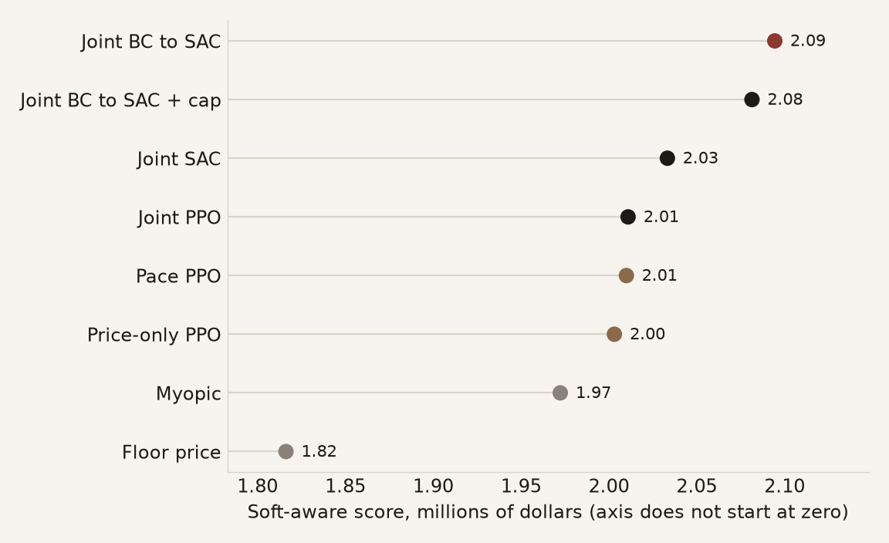
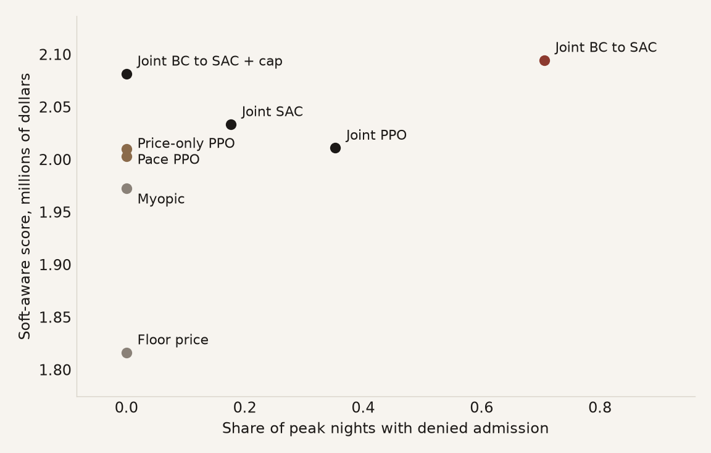
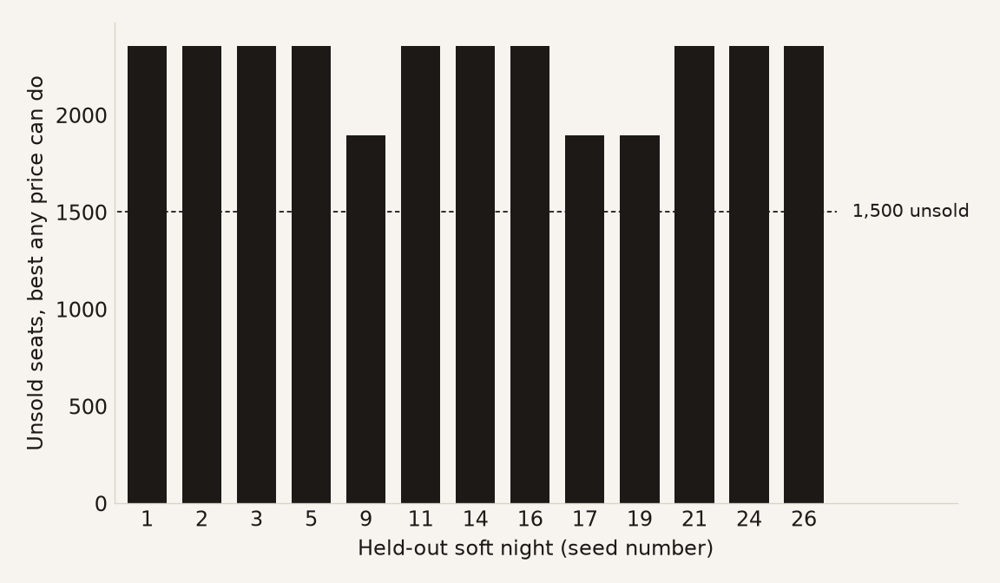
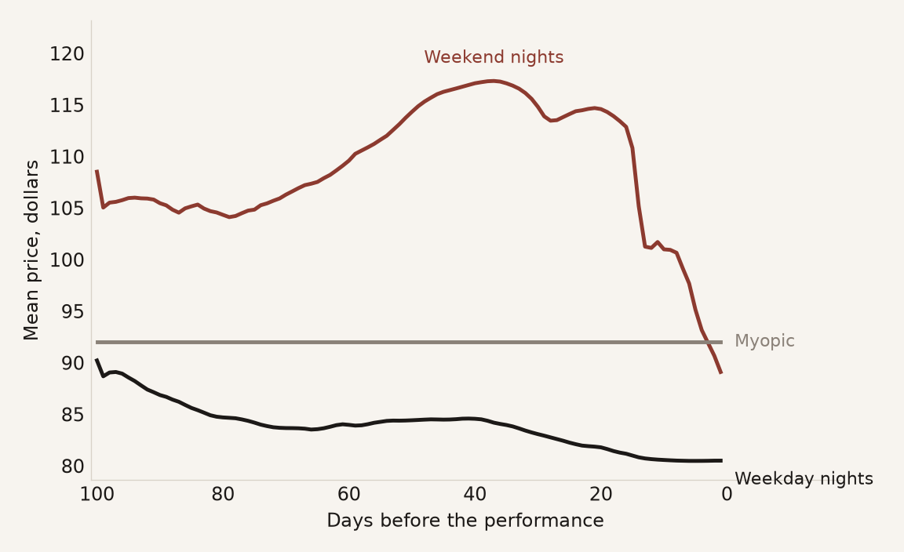
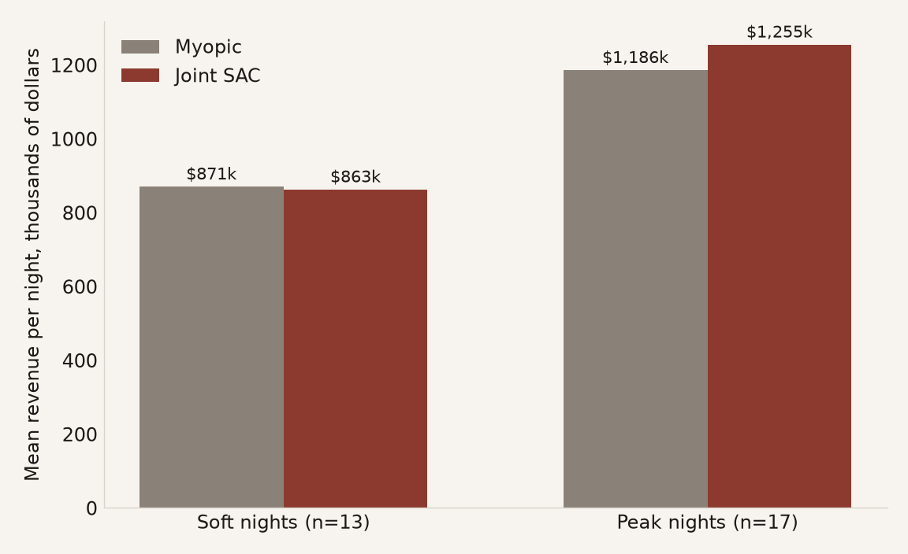

A revenue-management experiment
Both levers, or just the price
One policy sets the ticket price and the selling limit together. Another sets only the price. On a fictional amphitheater, with synthetic demand, the joint policies win on revenue. They do not win by filling the quiet nights.
01Problem
Ten thousand seats expire on one night, sold over a hundred-day booking horizon. Demand is stochastic and price-sensitive, and cancellations mean the house can be sold past the seats that exist.
Each day has two controls. Price runs from $80 to $120. The selling limit runs from 10,000 to 15,000. That is the most bookings on hand the venue will accept, so every booking above 10,000 is an overbooking buffer.
Selling past ten thousand is deliberate. People cancel, and some who do not cancel fail to arrive, so a house that stops selling at capacity opens with empty seats. A seat empty on the night is revenue nobody can recover the next morning. Airlines overbook for the same reason. The selling limit is the ceiling on how far past capacity the venue will go, and it is the second thing the agent has to decide. Revenue management calls it a booking limit or an authorization level. The standard treatment is Talluri and van Ryzin (2004).
Maximize revenue, charged for both ways of getting the night wrong: denied admission, more show-ups than seats, and spoilage, seats empty when the curtain rises. One policy for both controls, or price only, with the limit from a formula?
02Where this sits
Quantity control protects seats at given fares, from Littlewood (1972) through Belobaba's expected marginal seat revenue heuristics. Dynamic pricing sets the price path from capacity left, as in Gallego and van Ryzin (1994). McGill and van Ryzin (1999) survey both lines. Gosavi, Bandla, and Das (2002) reported gains over a nested-EMSR heuristic with reinforcement learning, in a simulation with discrete fare classes. This experiment is not that benchmark.
Four differences from that line:
- Both controls, one policy. Those two literatures usually keep the levers apart. One sets booking limits at posted fares. The other sets a price path given the seats left. Here one agent sets price and the selling limit together. A price-only twin, run on the same nights, measures what dropping the limit costs.
- No demand forecast in view. Littlewood, EMSR, and Gallego and van Ryzin all need one. The agent sees only where bookings stand and what day it is. It still learns two price paths. On weekends the price rises toward the date, then falls. On weekdays it eases down to $80.
- Spoilage is the wrong headline. Occupancy would treat empty seats as the failure. On this demand, even $80 with the house wide open still leaves every quiet night more than 1,500 seats short. Remaining inventory is not how the policies are ranked.
- Overbooking after training, not in the reward. Classical overbooking is designed into the optimization. Here a trained policy may overbook; a cap applied afterwards, with no retraining, is what takes denied admission to zero.
03The policies
Not learned
- Myopic. Each day, the price that maximizes this period's expected revenue under the true demand model. That is what a forecast-and-optimize rule does with a perfect forecast.
- Floor price. Always $80, limit wide open.
Learned
- PPO. Learns on-policy, from fresh rollouts. Joint PPO sets both controls. Price-only PPO sets the price; an analytic controller sets the limit. Pace PPO is price-only PPO trained with a booking-curve pace penalty and extra weight on soft nights.
- Joint SAC. An actor-critic that learns off-policy, from a replay buffer, with a bonus for trying actions. It fits two continuous levers.
- Joint BC to SAC. Starts from the myopic rule instead of noise, then lets SAC improve on the copy. The imitation takes both of the expert's numbers, the limit as well as the price. It fills hardest and oversells most.
- Copy the myopic rulethree hundred nights of the forecast-and-optimize rule
- Let SAC improvethe extra fill, and the overselling, come from here
Not a policy
- The cap. A projection applied after training. When a joint policy's limit would let expected show-ups pass 1.02 times capacity, the limit is lowered. No retraining.
04Setting
Demand is synthetic. A tree predicts base demand from the calendar and from how far out the night is; price then bends it linearly around $100. Cancellations are Weibull. No-shows run near 16 percent. No real box office is in this repository.
Thirty held-out nights, June and December, seeds 0 to 29. Every policy, table, and chart on this page uses these same thirty nights. Thirteen are soft nights. Seventeen are peak nights.
The score is two parts added. On a peak night, leftover seats are a failure. That part is revenue, minus $200 for every seat left unsold and $400 for every seat oversold. On a soft night, leftover seats are not a failure. Even a price of $80 with the house wide open still leaves more than 1,500 seats empty, as the bars below show. The soft part does not charge those empty seats. It charges a policy only when that policy takes in less than a price of $80 would have. No policy on this page takes in less than that, so the soft part equals soft-night revenue. Peak revenue and denied admission are what move the score. A difference in the score is a ranking only when the paired interval does not include zero. The order of the dots is not enough.
05Findings




runs/explain_rl_best/.
| Policy | Learned | Wide open, 15,000 | Flat, 12,353 | Peak nights denied |
|---|---|---|---|---|
| Joint BC to SAC | 2.094 | 1.855 | 1.943 | 0.71 → 0.82 |
| Joint SAC | 2.033 | 1.689 | 1.914 | 0.18 → 0.82 |
| Joint PPO | 2.011 | 1.903 | 1.921 | 0.35 → 0.82 |
Scores are in millions. Learned, wide open, and flat are three scores for the same prices. Only the selling limit changes. The last column is the share of peak nights where someone is turned away, first with the learned limit, then with the limit pinned at 15,000. Joint SAC's limit averages 12,578, within 2% of the flat pin at 12,353. Forcing it to stay at 12,353 still costs $120,000, because the learned limit changes from day to day and the flat pin does not.
| Policy | Uncapped | Capped | Score given up | Peak nights denied |
|---|---|---|---|---|
| Joint BC to SAC | 2.094 | 2.081 | 0.6% | 0.71 → 0 |
| Joint SAC | 2.033 | 2.009 | 1.2% | 0.18 → 0 |
| Joint PPO | 2.011 | 1.962 | 2.4% | 0.35 → 0 |
Joint BC to SAC turns people away on the most peak nights, and applying the cap costs this policy the least. The bookings the cap removes were already penalized as oversell. The interval on that 0.6% includes zero, so the capped score and the uncapped score are a tie.
| Policy | Score | How it gets to zero |
|---|---|---|
| Joint BC to SAC + cap | 2.081 | The cap. The interval versus pace sits above zero. |
| Pace PPO | 2.010 | price only |
| Joint SAC + cap | 2.009 | The cap. These nights were not saved one by one, so there is no interval. |
| Price-only PPO | 2.003 | price only |
| Joint PPO + cap | 1.962 | The cap. The score is below both price-only policies. |
Once nobody may be turned away, only capped Joint BC to SAC beats a price-only policy. The other joint policies do not.
What if the forecast is wrong? The myopic rule and the selling-limit controllers use the same demand model that generates the nights. A real venue does not get that model. If that forecast is wrong about price sensitivity by a plausible amount, myopic alone loses 3.5 to 5.8 percent. Capped Joint BC to SAC over pace is 3.6 percent, and that interval sits above zero. The joint policies do not move. Scores stay the same, and mean prices stay the same to the cent, because those policies never read a demand model. They see bookings and the calendar.
These policies do not need the forecast to be right, because they never had one. A forecast that is wrong only about the level of demand changes no price, for any policy here. Demand enters as a multiple, so that level cancels out of the sum that picks a price. Only a wrong price sensitivity changes the price.
- Best score with no denied admission. BC to SAC, plus the cap. On score it ties the uncapped policy; the cap is what removes the denied admissions.
- If denied admission is acceptable. Raw BC to SAC. It ties the capped policy on score, and it turns people away on 12 of 17 peak nights.
- The one whose behaviour is easiest to read. Joint SAC. The weekend and weekday price paths above are its.
- One lever, no denied admission. Pace PPO.
- If the forecast might be wrong. Any of the joint policies. They never read one.
06Limits
One synthetic demand model, one product, one venue, thirty nights. Training is not bit-for-bit the same on another machine.
| Capped Joint BC to SAC vs pace | 3.6% on the published training. The interval sits above zero. |
| Same pair, retrained | That lead does not repeat on every seed. |
| Joint SAC vs pace | The interval covers zero. |
| Joint PPO vs pace | The interval covers zero. |
| An earlier thirty nights | On an earlier set of thirty nights, Joint SAC ranked first among the joint policies. |
| Limit it sets | 12,353 |
| Most bookings it ever holds | 11,402. It never holds that many, so the limit never binds. |
| Move that limit up to 15,000 | Revenue identical to the cent |
| One-lever benchmark | Pace PPO, price-only by construction |
At $80, the same venue reaches that booking ceiling. At myopic's own price of $92, the limit never binds.
| Fill rate | Check an oracle ceiling before trusting one. |
| A baseline | Check whether its constraints bind before crediting them. |
| Overbooking | Keep the risk in a projection, not in the reward. |
07References and further reading
- Littlewood, K. (1972). Forecasting and control of passenger bookings. AGIFORS Symposium.
- Belobaba, P. (1989). Application of a probabilistic decision model to airline seat inventory control. Operations Research.
- Gallego, G. and van Ryzin, G. (1994). Optimal dynamic pricing of inventories with stochastic demand over finite horizons. Management Science.
- McGill, J. and van Ryzin, G. (1999). Revenue management: research overview and prospects. Transportation Science.
- Gosavi, A., Bandla, N., and Das, T. (2002). A reinforcement learning approach to a single leg airline revenue management problem with multiple fare classes and overbooking. IIE Transactions.
- Talluri, K. and van Ryzin, G. (2004). The Theory and Practice of Revenue Management. Springer.